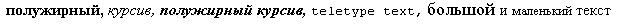
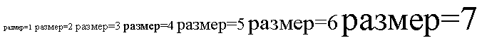
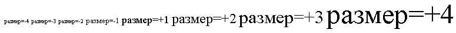

Содержание
В этом разделе спецификации обсуждаются некоторые элементы и атрибуты языка HTML, которые могут использоваться для визуального форматирования элементов. Многие из них являются нежелательными.
Определение атрибутов
Этот атрибут устанавливает цвет фона тела документа (элемент BODY) или таблицы (элементы TABLE, TR, TH, and TD). В элементе BODY могут использоваться дополнительные атрибуты для указания цвета текста.
Использование этого атрибута не рекомендуется, вместо этого следует использовать таблицы стилей.
Выравнивать блочные элементы (таблицы, изображения, объекты, абзацы и т.д.) можно с помощью атрибута align. Хотя этот атрибут может устанавливаться для многих элементов HTML, диапазон его возможных значений в разных элементах может быть различным. Здесь обсуждается только значение атрибута align для текста.
Определения атрибутов
Значение по умолчанию зависит от общего направления текста. Для текста, направленного слева направо, по умолчанию используется значение align=left, я для текста, направленного справа налево - align=right.
ПРИМЕР НЕЖЕЛАТЕЛЬНОГО ИСПОЛЬЗОВАНИЯ:
В данном примере заголовок центрируется.
<H1 align="center"> How to Carve Wood </H1>
С использованием CSS, например, Вы можете достичь того же эффекта следующим образом:
<HEAD>
<TITLE>How to Carve Wood</TITLE>
<STYLE type="text/css">
H1 { text-align: center}
</STYLE>
<BODY>
<H1> How to Carve Wood </H1>
Обратите внимание, что будут выровнены все объявления H1. Вы можете ограничить область действия стиля, установив атрибут class:
<HEAD>
<TITLE>How to Carve Wood</TITLE>
<STYLE type="text/css">
H1.wood {text-align: center}
</STYLE>
<BODY>
<H1 class="wood"> How to Carve Wood </H1>
ПРИМЕР НЕЖЕЛАТЕЛЬНОГО ИСПОЛЬЗОВАНИЯ:
Аналогично, чтобы выровнять абзац по правому краю с помощью атрибута HTML align Вы можете записать:
<P align="right">...Текст абзаца...
а с использованием CSS:
<HEAD>
<TITLE>How to Carve Wood</TITLE>
<STYLE type="text/css">
P.mypar {text-align: right}
</STYLE>
<BODY>
<P class="mypar">...Текст абзаца...
ПРИМЕР НЕЖЕЛАТЕЛЬНОГО ИСПОЛЬЗОВАНИЯ:
Чтобы выровнять по правому краю ряд абзацев, сгруппируйте их с помощью элемента
DIV:
<DIV align="right"> <P>...текст первого абзаца... <P>...текст второго абзаца... <P>...текст третьего абзаца... </DIV>
С использованием CSS свойство выравнивания текста наследуется от родительского элемента, поэтому Вы можете использовать:
<HEAD>
<TITLE>How to Carve Wood</TITLE>
<STYLE type="text/css">
DIV.mypars {text-align: right}
</STYLE>
<BODY>
<DIV class="mypars">
<P>...текст первого абзаца...
<P>...текст второго абзаца...
<P>...текст третьего абзаца...
</DIV>
Чтобы отцентрировать с использованием CSS весь документ:
<HEAD>
<TITLE>How to Carve Wood</TITLE>
<STYLE type="text/css">
BODY {text-align: center}
</STYLE>
<BODY>
...тело документа отцентрировано...
</BODY>
Использование элемента CENTER абсолютно эквивалентно использованию элемента DIV с атрибутом align, для которого установлено значение "center". Использование элемента CENTER нежелательно.
Изображения и объекты могут быть "встроенными" или прикрепляться к краю страницы, временно изменяя поля текста с учетом объекта.
Атрибут align для объектов, изображений, таблиц, фреймов и т.д. приводит к тому, что объект прикрепляется к левому или правому краю. Обычно прикрепляемые объекты располагаются с новой строки. Для этого атрибута могут устанавливаться следующие значения:
ПРИМЕР НЕЖЕЛАТЕЛЬНОГО ИСПОЛЬЗОВАНИЯ:
В следующем примере показано, как прикрепить элемент IMG к левому полю.
<IMG align="left" src="http://foo.com/animage.gif" alt="моя лодка">
Некоторые атрибуты выравнивания допускают значение "center", который не прикрепляет объект, но центрирует его относительно текущих полей. Однако для элементов P и DIV значение "center" приводит к центрированию содержимого элемента.
Другой атрибут, определенный для элемента BR, управляет обтеканием текста вокруг прикрепленных объектов.
Определения атрибутов
Рассмотрим следующий визуальный сценарий, в котором обтекание текстом производится справа от изображения до разрыва строки с помощью BR:
**************** ------- | | ------- | изображение | --<BR> | | ****************
Если для атрибута clear установлено значение none, строка, следующая за BR, начнется сразу же за ним справа от изображения:
*************** ------- | | ------- | изображение | --<BR> | | ------ ***************
ПРИМЕР НЕЖЕЛАТЕЛЬНОГО ИСПОЛЬЗОВАНИЯ:
Если для атрибута clear установлено значение left или all, следующая строка будет отображаться так:
*************** ------- | | ------- | изображение | --<BR clear="left"> | | *************** -----------------
С помощью таблиц стилей Вы можете задать подобное поведение для всех концов строк для всех объектов (изображений, таблиц и т.д.), прикрепленных к левому полю. С использованием CSS Вы можете достичь этого эффекта следующим образом:
<STYLE type="text/css">
BR { clear: left }
</STYLE>
Чтобы определить такое поведение только для определенных экземпляров элемента BR, следует использовать атрибут id:
<HEAD>
...
<STYLE type="text/css">
BR.mybr { clear: left }
</STYLE>
</HEAD>
<BODY>
<P>...
*********** -------
| | -------
| таблица | --<BR id="mybr">
| |
***********
-----------------
...
</BODY>
Следующие элементы HTML определяют информацию о шрифтах. Хотя не все они нежелательны, рекомендуется использовать вместо них таблицы стилей.
<!ENTITY % fontstyle "TT | I | B | BIG | SMALL"> <!ELEMENT (%fontstyle;|%phrase;) - - (%inline;)*> <!ATTLIST (%fontstyle;|%phrase;) %attrs; -- %coreattrs, %i18n, %events -- >
Начальный тег: обязателен, Конечный тег: обязателен
Атрибуты, определяемые в другом месте
Представления элементов, определяющих стиль шрифта, зависит от агента пользователя. Далее приведено только информативное описание.
В следующем предложении показаны несколько типов текста:
<P><b>полужирный</b>, <i>курсив</i>, <b><i>полужирный курсив</i></b>, <tt>моноширинный</tt> и <big>большой</big> и <small>малый</small> текст.
Слова будут представлены следующим образом:

С использованием таблиц стилей можно достичь большего разнообразия эффектов. Чтобы задать для абзаца синий курсив с помощью CSS, запишите:
<HEAD>
<STYLE type="text/css">
P.mypar {font-style: italic; color: blue}
</STYLE>
</HEAD>
<P id="mypar">...Текст синим курсивом...
Элементы стиля шрифта должны корректно вкладываться. Представление вложенных элементов стиля зависит от агента пользователя.
Использование элементов FONT и BASEFONT нежелательно.
Формальное определение см. в Transitional DTD.
Определения атрибутов
Атрибуты, определяемые в другом месте
Элемент FONT изменяет размер и цвет шрифта для текста его содержимого.
Элемент BASEFONT устанавливает базовый размер шрифта (с помощью атрибута size). Изменения размера шрифта с помощью элемента FONT производятся относительно базового размера, установленного элементом BASEFONT. Если элемент BASEFONT не используется, по умолчанию используется размер 3.
ПРИМЕР НЕЖЕЛАТЕЛЬНОГО ИСПОЛЬЗОВАНИЯ:
В следующем примере показана разница между семью размерами шрифтов, устанавливаемых с помощью элемента FONT:
<P><font size=1>size=1</font> <font size=2>size=2</font> <font size=3>size=3</font> <font size=4>size=4</font> <font size=5>size=5</font> <font size=6>size=6</font> <font size=7>size=7</font>
Это может представляться следующим образом:

Далее показан пример установки относительного размера шрифта с использованием базового размера 3:

Базовый размер шрифта не применяется к заголовкам, если они не изменены с помощью элемента FONT с указанием относительного размера шрифта.
<!ELEMENT HR - O EMPTY - горизонтальный разделитель --> <!ATTLIST HR %coreattrs; -- id, class, style, title -- %events; >
Начальный тег: обязателен, Конечный тег: запрещен
Определения атрибутов
По умолчанию используется align=center.
Атрибуты, определяемые в другом месте
Элемент HR приводит к генерации горизонтального разделителя визуальными агентами пользователей.
Высота пустого пространства между разделителем и текстом зависит от агента пользователя.
ПРИМЕР НЕДОПУСТИМОГО ИСПОЛЬЗОВАНИЯ:
В этом примере разделители центрируются, а их размер устанавливается в половину ширины между полями. Верхний разделитель имеет толщину по умолчанию, а для нижнего установлена толщина 5 пикселов. Нижний разделитель должен представляться сплошным цветом без тени:
<HR width="50%" align="center"> <HR size="5" width="50%" align="center"> <HR noshade size="5" width="50%" align="center">
Эти разделители могут представляться следующим образом: